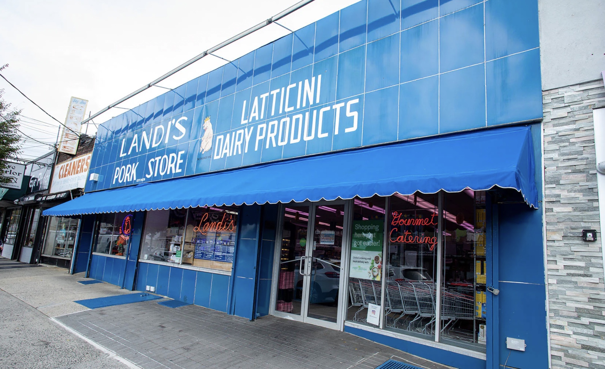
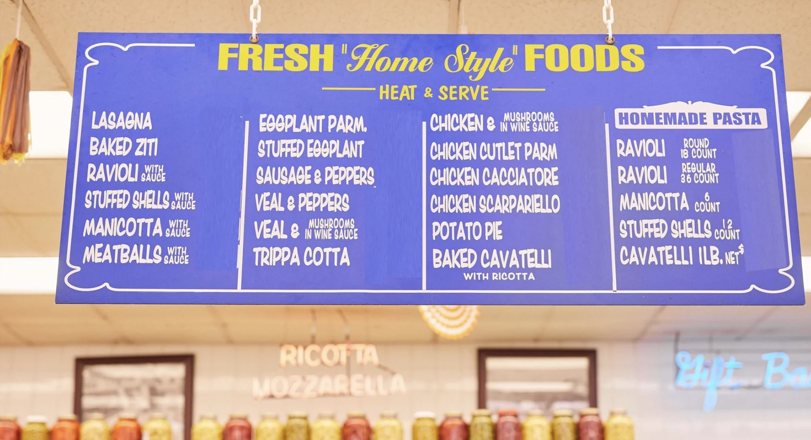

GEM SPA HAS BEEN IN BUSINESS SINCE THE 1920's.
The current owner, Ray Patel, bought the store in 1986. Gem Spa is
famous for its egg creams, a quintessential New York beverage
originally served in candy stores throughout the Lower East Side
beginning in the 1920's.
GEM SPA HAS BEEN AN EAST VILLAGE INSTITUTION FOR DECADES, HERALDED
AS THE BIRTHPLACE OF THE EGG CREAM AND KNOWN FOR BEING THE THE
BACKGROUND TO THE NEIGHBORHOOD'S PUNK ROCK YEARS.
The egg cream does not contain eggs or cream but is a mixture of
very cold milk, seltzer, and flavored syrup. The Gem Spa owners have
al- ways kept their milk in the ice cream freezer because one of the
keys to making a great egg cream is to use extremely cold milk. It's
also 'all in the way you stir it.' Because most of the original soda
fountain locations have closed, true egg creams are rapidly
disappearing.

UNTIL 2020, GEM SPA CONTINUED TO MAKE THEIR EGG CREAMS USING THE
SAME RECIPE AND ORIGINAL SODA FOUNTAIN MACHINE FROM THE 1940'S.
The countermen learned to make egg creams from the previous owner
who learned from the previous owner before him. The chocolate,
vanilla, and coffee-flavored syrups were once made in the basement
by the store's original owner.
THE STORE RAN INTO FINANCIAL TROUBLE AS A RESULT OF LOSING ITS
CIGARETTE AND TOBACCO LICENSE, A MAJOR SOURCE OF REVENUE.
On May 7, 2020, owner Parul Patel announced that the physical store
would not re-open due to the impact of the COVID-19 pandemic and
rent increases, despite community efforts and a social media
campaign to keep it open.
“If you’re not a grocery or you’re not vape [store], you’re not
gonna survive, and even vapes are about to go out of business. Look:
soda, candy, chips. Health wise, people stopped eating this stuff.
Whatever they’re ordering, they’re ordering on Amazon and get
delivered to their door. It’s cheaper. New Yorkers want convenience,
and they want to save money... The people who live here, they love
us, but they’re not going to walk five blocks to come and buy their
cigarettes here, or their soda. They’re not even going to walk one
block if there’s a guy in the middle. That’s just how New York is. ”
“The neighborhood that appreciates old New York is not here. This
neighborhood is all young professionals. They want everything
beautiful. They want everything new.”
"I was running it with my heart. And I did not want to let go of my
baby, because it was my dad’s baby and it became my baby.""
-OWNER PARUL PATEL